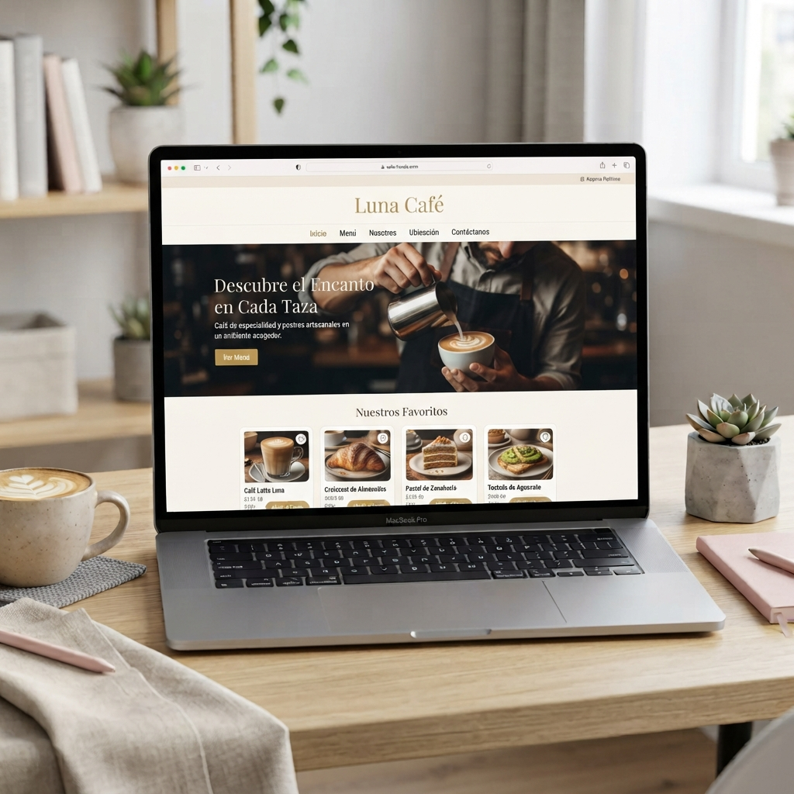
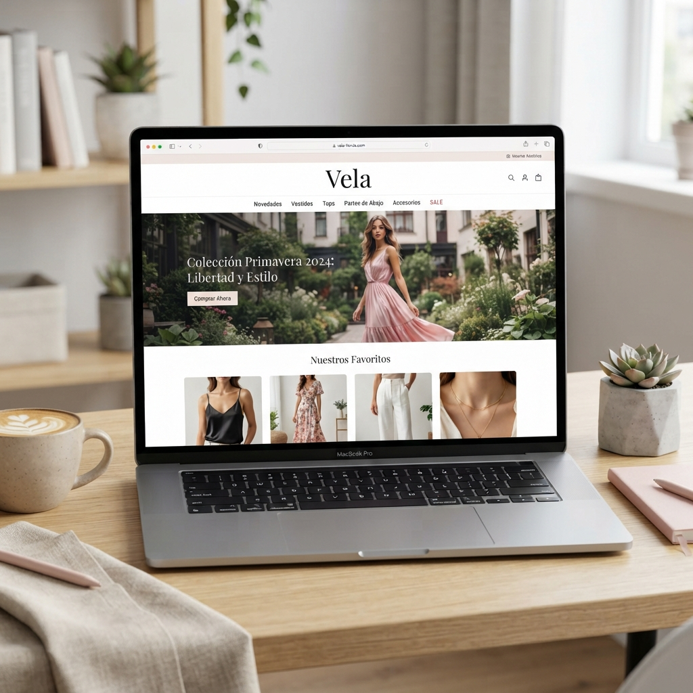
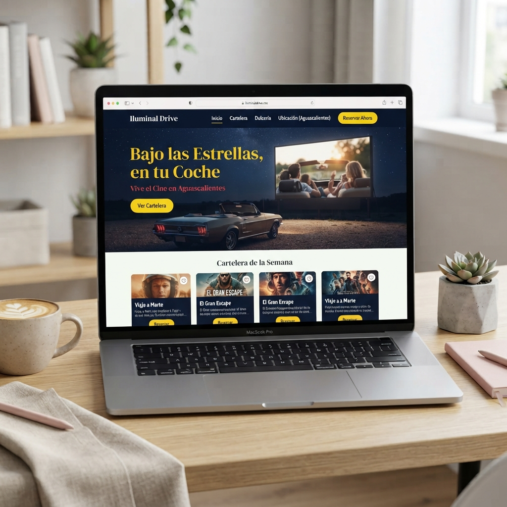

Mis proyectos
Aquí puedes conocer algunos de los proyectos que he realizado durante mi formación en diseño y desarrollo web.

Luna Café
Proyecto de práctica para una cafetería ficticia. Diseño de una página web moderna, atractiva y fácil de utilizar.
Proyecto de práctica

Vela
Proyecto de práctica para una tienda de ropa ficticia. Se trabajó una propuesta visual moderna y una estructura pensada para una tienda en línea.
Proyecto de práctica

Iluminal Drive
Proyecto académico de diseño web para un autocine en Aguascalientes, enfocado en una experiencia juvenil, divertida y atractiva.
Proyecto académico
Mi forma de trabajar
Cada proyecto comienza con una idea y se desarrolla tomando en cuenta las necesidades del cliente. Busco crear páginas web funcionales, atractivas y fáciles de utilizar.
Me enfoco en cuidar el diseño, la organización de la información y la experiencia del usuario para lograr un resultado que cumpla con los objetivos del proyecto.